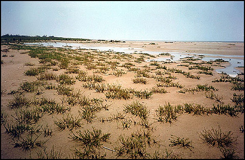
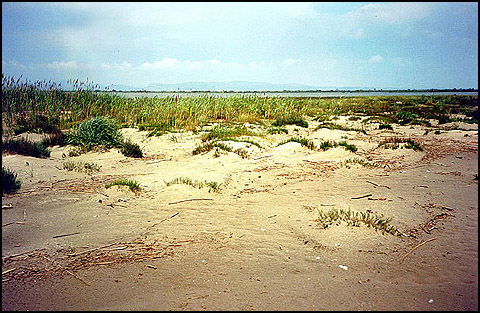

|
Βλάστηση αμμοθινών και αμμωδών ακτών |
|
|
Atriplex tatarica |
Αλυμιά |
|
Cakile maritima |
Αγριοκαρδαμούδα |
|
Polygonum maritimum |
- |
|
Elymus spp. |
- |
|
Diotis maritima |
- |
|
Pancratium maritimum |
Κρίνος της Θάλασσας |
|
Euphorbia paralias |
Γαλατσίδα |
|
Eryngium maritimum |
Αγκάθι |
|
Artemisia spp. |
- |
Κατά μήκος των ακτών του υγροτόπου και κυρίως στο δυτικό τμήμα όπως και στις νησίδες Καραβιού Ξηράδι και Ασάνη, υπάρχει μια ζώνη από χαλαρό αμμώδες υπόστρωμα που αποτελεί το σύστημα των αμμοθινών. Η αμμόφιλη βλάστηση των ακτών αυτών παρουσιάζει μια ποικιλομορφία ανάλογα με τις ιδιαίτερες οικολογικές συνθήκες των επιμέρους βιοτόπων.
Βασικά στην περιοχή αυτή έχουμε δύο ζώνες, τη ζώνη των κρασπέδων που με τον κυματισμό της θάλασσας εκπλύνονται και εσωτερικότερα τη ζώνη των αμμοθινών.
Στην πρώτη ζώνη το πλάτος της οποίας κυμαίνεται από 3 ως 5 μέτρα, μετά από μια γυμνή από βλάστηση ζώνη εμφανίζονται οι πρώτες φυτοκοινωνίες συνήθως νιτρόφιλες της κλάσεως Cakiletea.
Στη δεύτερη ζώνη που βρίσκεται πιομέσα και συνήθως είναι περίπου 1 μέτρο πάνω από την επιφάνεια της θάλασσας επικρατούν τα αμμόφιλα είδη:
Elymus farctus, Diotis maritima, Pancratium maritimum, Medicago marina, Verbascum pinnatifidum, Euphorbia paralias, Eryngium maritima, Centaurea cuneifolia, Elymus giganteus ssp.sabulosus, Artemisia maritima, Artemisia campestris.
Tο είδος Elymus giganteus ssp. sabulosus έχει ευξεινική-νοτιορωσσική προέλευση και αποτελεί στον Έβρο τη μοναδική Μεσογειακή εμφάνιση.
Ενδιαφέρον τόσο επιστημονικό όσο και οικοτουριστικό παρουσιάζει το χαρακτηριστικό της περιοχής αυτής σε ορισμένες θέσεις των νεοσχηματισθέντων θινών στις νησίδες, οι θίνες εμφανίζουν μια χαρακτηριστική τοξοειδή ανάπτυξη λόγω των επικρατούντων ανέμων αλλά και του μικρού ύψους. Οι θίνες αυτές συχνά σκεπάζονται από το θαλασσινό νερό και έτσι η βλάστησή τους αποτελείται από αλόφιλα είδη που στερεώνουν τις θίνες οπότε αργότερα εισέρχονται τα αμμόφιλα είδη.
